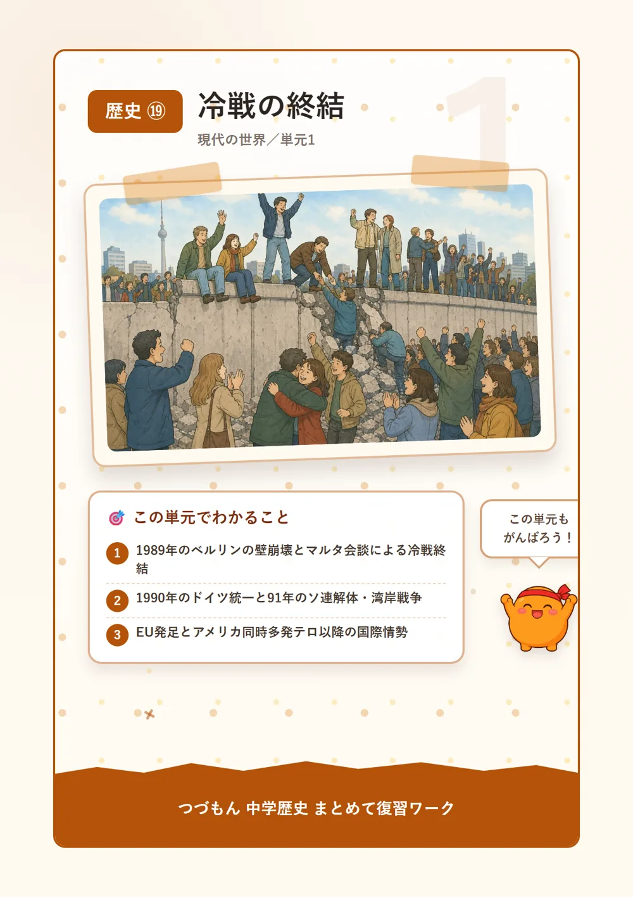
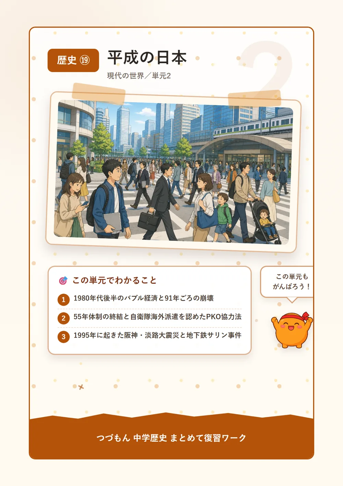
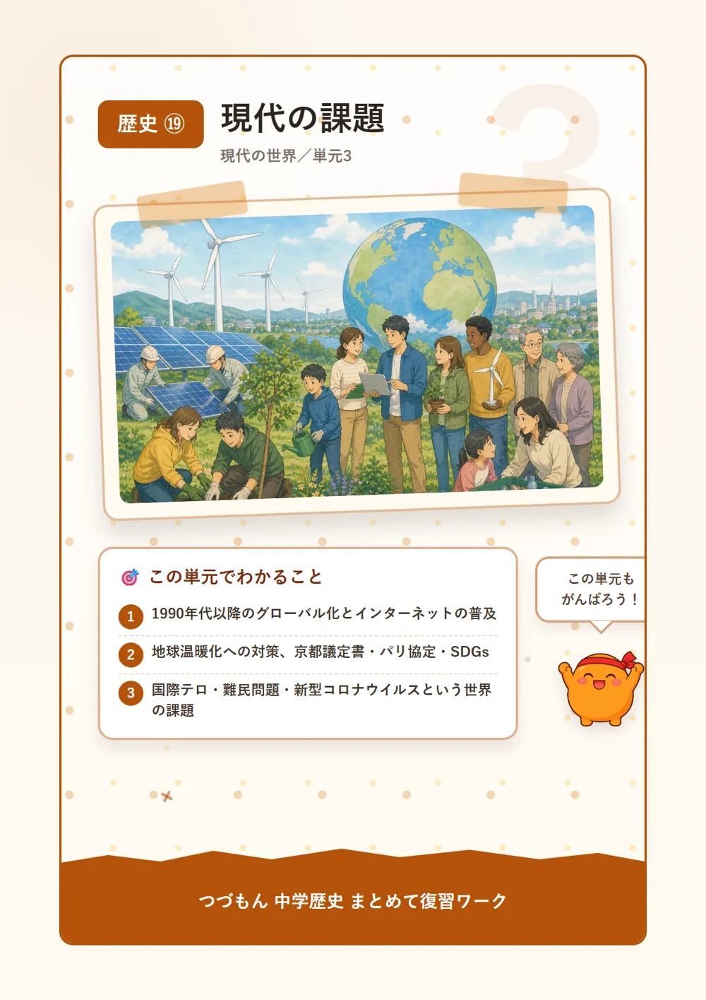

現代の世界
 いっしょに
いっしょに読もう！
冷戦の終結

1冷戦の終わりを告げたベルリンの壁崩壊
第二次世界大戦のあと、アメリカを中心とする西側とソ連を中心とする東側は、激しくにらみ合う冷戦という状態が長く続いていたんだ。でも1989年、東西ドイツを分けていたベルリンの壁がついに崩れたんだよ。同じ年、ソ連の指導者ゴルバチョフとアメリカの首脳がマルタ会談を開いて、長い冷戦の終結を宣言したんだ。壁が壊れる映像を見て、世界中が驚いたんだって。知ってた?ゴルバチョフはペレストロイカという国内改革も進めていたんだよ。
2ドイツ統一とソ連の解体
ベルリンの壁が崩れた翌年の1990年、東西に分かれていたドイツが一つの国に統一されたんだ。そして1991年には、あの大国ソ連が解体して、ロシアなど15の共和国に分かれてしまったんだよ。すごいよね、たった数年で世界地図が変わってしまうくらいの出来事なんだ。同じ1991年、イラクがクウェートに攻めこんだことをきっかけに湾岸戦争が起こったよ。冷戦の終わりは、世界に平和だけでなく新しい対立も生んでしまったんだね。
3EUの発足と新しいテロとの戦い
1993年には、ヨーロッパの国々がまとまって協力するEU(ヨーロッパ連合)が発足したんだ。のちにユーロという共通のお金も使われるようになったよ。でも世界が平和になったわけではなくて、2001年9月11日にはアメリカ同時多発テロという大きな事件が起きてしまうんだ。このテロがきっかけでアフガニスタン戦争が始まり、2003年にはアメリカがイラク戦争を起こしてフセイン政権を倒したんだよ。冷戦のあとも、世界はいろいろな課題と向き合い続けているんだね。

平成の日本

1バブル経済とその崩壊
1980年代後半、日本では株や土地の値段が実力以上にどんどん上がっていくバブル経済という現象が起きていたんだ。まるで泡(バブル)がふくらむみたいに景気が良くなっていったんだよ。でも1991年ごろ、そのバブルは崩壊してしまい、株価や地価が一気に下がって、日本は長い不況に入ってしまったんだ。不思議でしょ?あんなに好景気だったのに、あっという間に景色が変わってしまったんだね。この不況はその後何年も日本経済に影響を与え続けたよ。
255年体制の終わりとPKO協力法
1993年、長く続いていた自民党中心の政治のしくみ(55年体制)がついに終わって、細川護熙を首相とする連立政権が生まれたんだ。政治の世界にも大きな変化が起きたんだね。また1992年には、自衛隊が海外に行けるようにするPKO協力法が成立したよ。これによって、日本の自衛隊も国連の平和維持活動(PKO)に参加できるようになったんだ。日本の役割が、国内だけでなく世界にも広がっていった時代なんだよ。
3阪神・淡路大震災と地下鉄サリン事件
1995年、日本は大きなショックに立て続けに見舞われたんだ。1月17日には兵庫県南部で阪神・淡路大震災が起こり、神戸などで大きな被害が出たんだよ。さらに3月には、オウム真理教が東京の地下鉄で地下鉄サリン事件というテロを引き起こしたんだ。同じ年にこれだけの出来事が重なるなんて、当時の人たちはとても不安な思いをしただろうね。この経験は、その後の防災や安全対策を見直すきっかけにもなったんだよ。
4東日本大震災と少子高齢化
2011年3月11日、東北地方で東日本大震災が起こったんだ。大きな津波が街をのみこみ、さらに福島第一原発事故も引き起こしてしまったんだよ。津波で電源が止まり、原子炉を冷やせなくなって燃料が溶け出す、メルトダウンという事態になったんだ。一方、今の日本は生まれる子どもが減る少子化と、お年寄りの割合が増える高齢化が同時に進む少子高齢化という課題にも向き合っているよ。どちらも、これからの日本を考えるうえでとても大事なテーマなんだ。
現代の課題

1グローバル化と情報化社会
1990年代以降、人・物・お金・情報が国境を越えて世界中に広がっていくグローバル化が急速に進んだんだ。同じころ、インターネットも一気に普及して、コンピュータが生活に欠かせない情報化社会がやってきたんだよ。世界のニュースがすぐに届いたり、遠くの人と簡単に連絡が取れたり…すごいよね。でも便利になった分、世界のどこかで起きた問題が、すぐに自分たちの生活にも影響するようになったとも言えるんだ。
2地球温暖化と世界の取り組み
二酸化炭素などの温室効果ガスが増えることで地球の気温が上がってしまう地球温暖化は、今とても深刻な問題なんだ。このままだと気候や災害にも大きな影響が出てしまうんだよ。そこで1997年には温室効果ガスの削減を約束した京都議定書が、2015年にはもっと多くの国が参加するパリ協定が採択されたんだ。同じ2015年には、貧困や環境など17の目標をかかげるSDGsも国連で決められたよ。世界みんなで力を合わせようとしているんだね。
3国際テロ・難民問題・感染症
2001年のアメリカ同時多発テロ以降、国境を越えて人々を攻撃する国際テロが世界の大きな脅威になっているんだ。また、戦争や迫害によって住む場所を追われる人々が増える難民問題も、世界各地で深刻になっているんだよ。つらい思いをしている人がたくさんいるんだね。そして2019年末からは新型コロナウイルス感染症が世界中で流行して、人々の生活や経済に大きな影響を与えたんだ。世界がひとつにつながっているからこそ、こうした問題もあっという間に広がってしまうんだね。
4日本が抱える領土問題
日本にはいくつかの領土問題があるんだよ。北方領土は歯舞群島・色丹島・国後島・択捉島の4島で、日本は返還を求めているんだ。竹島は日本が領有権を主張する一方でお隣の韓国が実際に管理していて、尖閣諸島は逆に日本が実際に管理しているけれど中国などが領有権を主張しているんだよ。似ているようで実は違う関係なんだね。こうした問題は、これからも冷静に話し合いを続けていく必要があるテーマなんだ。